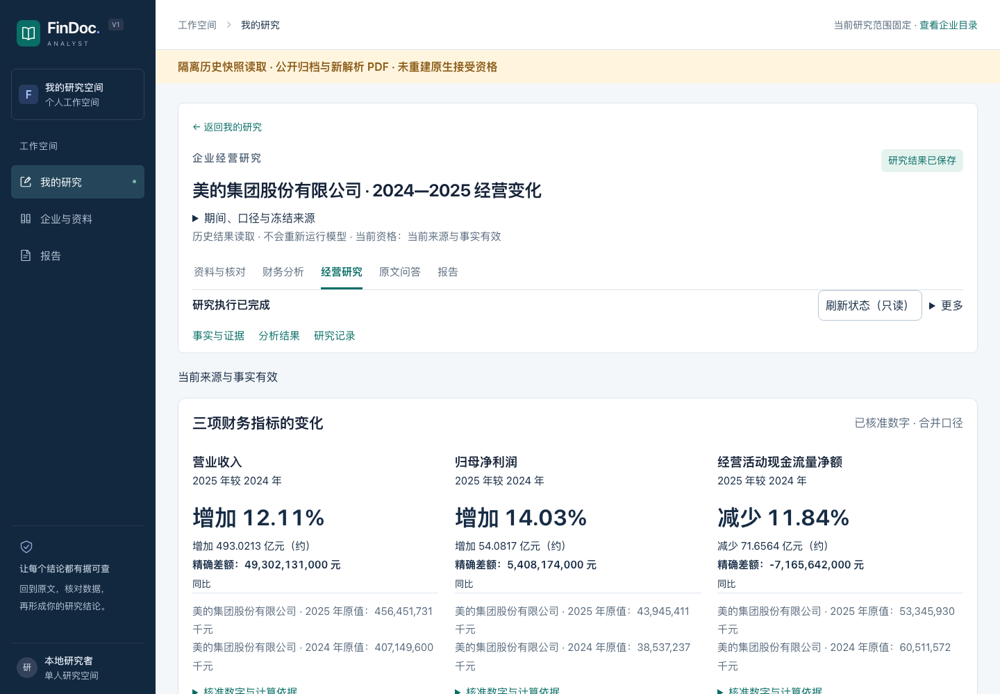

FINDOC ANALYST / PRODUCT SHOWCASE
从企业年报到研究成果读懂财务变化，
读懂财务变化，
让每个结论
有据可查。
FinDoc Analyst 将年报中的财务事实、原文证据与版本报告串成一条可核对的研究路径。
开始阅读美的研究案例约 3 分钟 · 历史结果阅读 · 无现场模型调用


三步，看懂一份研究
研究 → 问答证据 → 报告版本真实业务链已经完成，展示范围保持清楚
正式产品支持年报核对、人工接受、独立保存、研究与版本报告。本页只展示已保存结果。
D30 已完成
四报十二项财务事实、三项真实研究、三份报告六个版本。
仍待完成
D30 新十八题问答与十二条解释语义 pending；五人陌生用户验收未执行。
本路线是 D28 历史，不能把 D30 的完成状态或旧外部意见移植到其他对象。